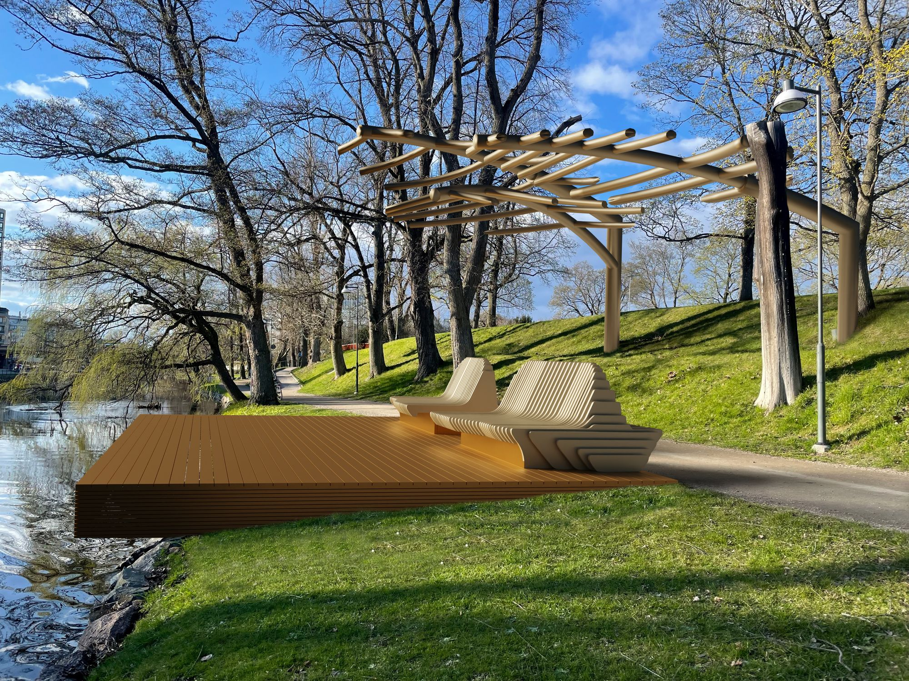
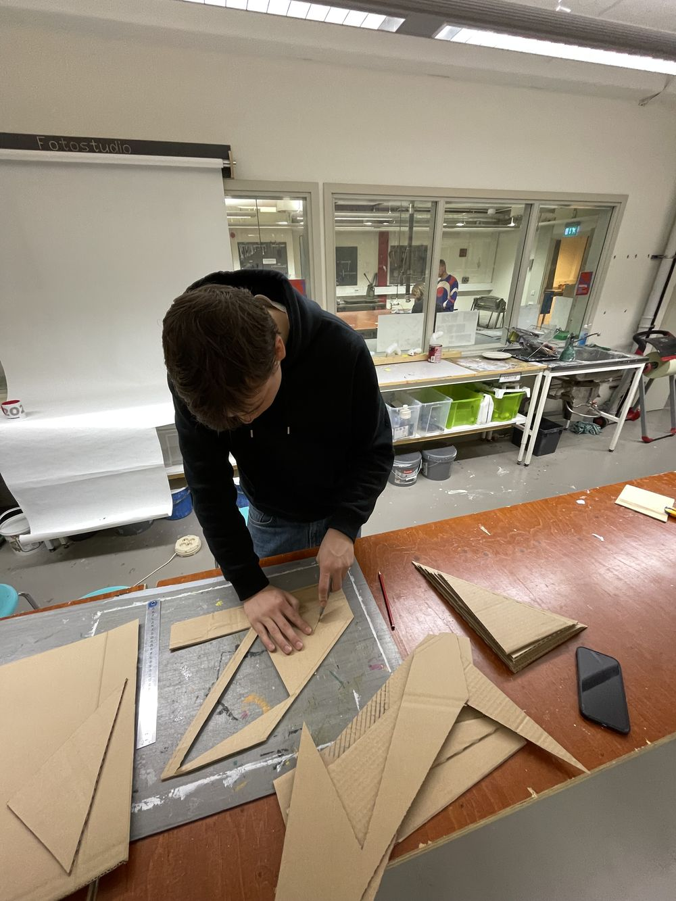
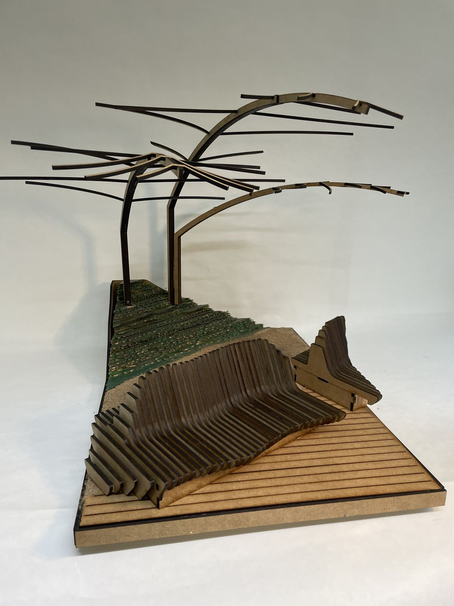
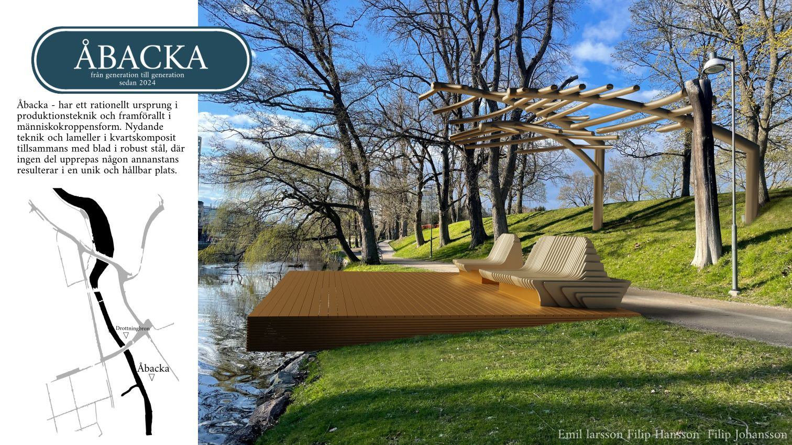

Course project · Year 1 · 2024
Åbacka
Outdoor furniture designed for one specific place: the riverbank along Stångån in Linköping. Form, function and material chosen from the site itself.

Visualisation on site, by Stångån
The brief
Create custom outdoor furniture for a place along Stångån in Linköping, letting the site drive the form, the function and the choice of materials.
Reading the site
We started on site, studying how people move along the path, where they stop and how the slope meets the water.


Concept
From generation to generation.
Åbacka has a rational origin in production technology and, above all, in the shape of the human body. Slats in quartz composite combined with robust steel blades mean no part repeats another, creating a unique and durable place to sit, lie and gather by the water.

Model
The form was developed through physical models, building the loungers up from stacked, individually cut sections, the same logic as the full-scale slats.




Outcome
Next project